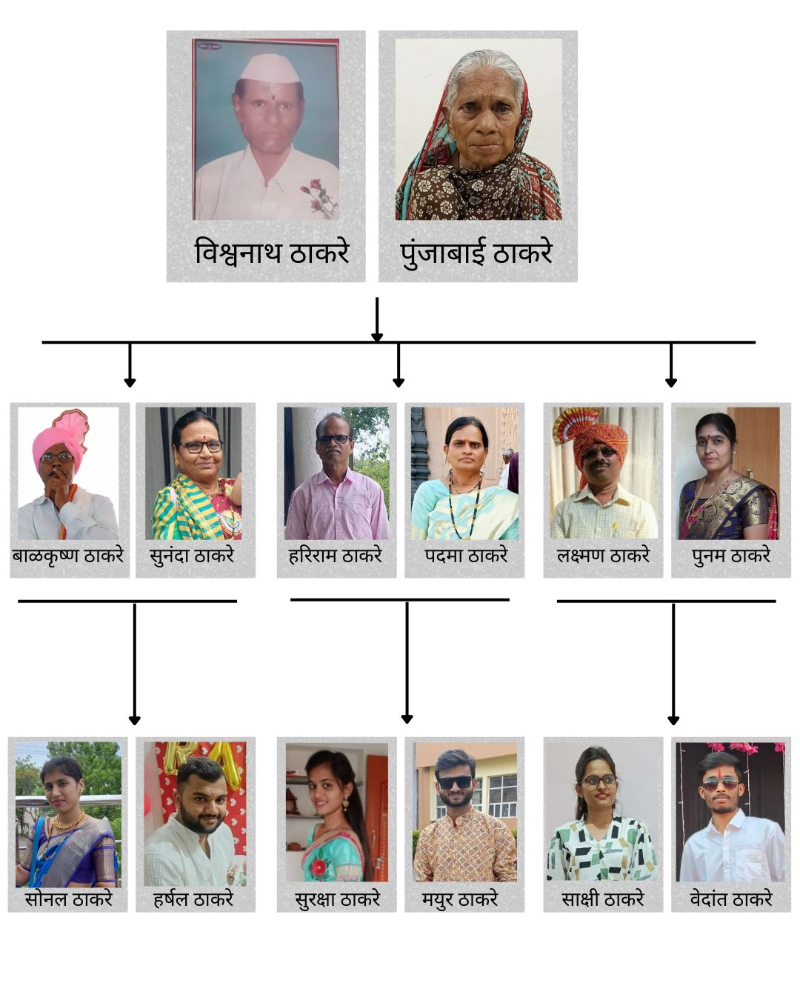

Thakare family is the Maharashtrian family living in Akot which is in Akola District.
Our family is a small, loving, and very supportive built with respect, unity, and kindness.
Our family believes in love, respect, education, and togetherness.
There are 4 members in my family. The family consists of Father, Mother, Sister and Brother.
Each member plays an important role in maintaining happiness and harmony in the family.
Family Members
1. Vedant Thakare (Me) [Student]
2. Sakshi Thakare (Sister) [Student]
3. Laxman Thakare (Father) [Electrician]
4. Punam Thakare (Mother) [House Wife]
Family History
Thakare Family is root family of NER-Dhamna which is in Chohotta Bazaar Talukka in Akola District. At
NER-Dhamna we of 14 members were living together as a joint family.
But for education and development purpose my father (Laxman Thakare) had shifted to Akot Talukka. He done
there education at ITI and job at MELCO ELECTRONICS in Akot and afterwards we the family of 4 members have
settled in
Akot.
Family Tree & Ancestors

Festivals Celebrated
1. Diwali – Unity and joy
2. Ganesh Chaturthi – Devotion and togetherness
3. Gudi Padwa – New beginnings
4. Holi – Happiness and bonding
❤️ Food is a symbol of love and unity in our family.
Festival Preparation 🪔
1] Everyone participates in decorating the house during festivals.
2] Making sweets like modak and ladoos together.
3] Preparing rangoli and lighting diyas during Diwali.
Hobbies & Interests
1] Grandfather: Reading newspapers, gardening 🌱
2] Grandmother: Cooking traditional food, bhajans 🎶
3] Father: Watching cricket, driving 🚗
4] Mother: Cooking, rangoli making 🎨
5] Daughter: Dancing, photography 📸
6] Son: Playing cricket, video games
Proud Moments
1] My Grandfather and Grandmother is always believe in donating the blood to needy people and being helpful
in any kind of situations for the society
2] My Grandfather are always in search of incourage to the farmer for there hardwork
3] Donate money in construction of Hanuman Mandir in our village
4] Donate money in Dam-construction in our village